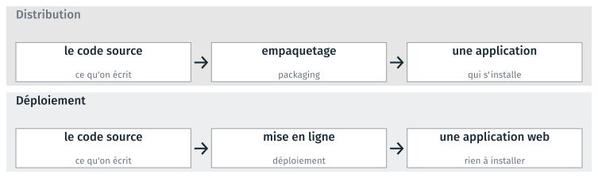
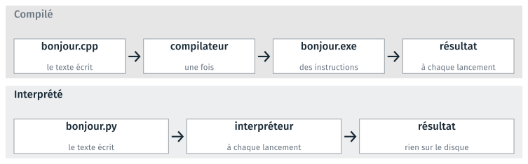
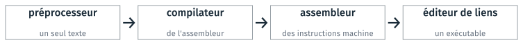
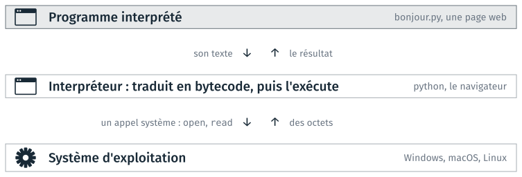
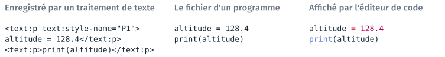
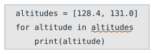
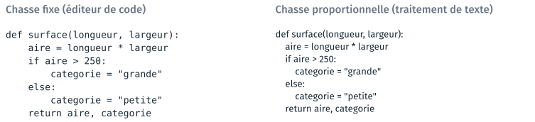
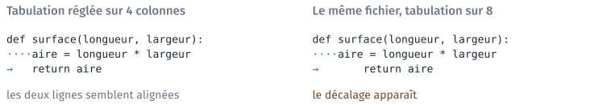

Programmation et éditeur de code#
Cette partie décrit ce qui sépare le texte d’un programme de son exécution : la compilation, l’interprétation, et la place de l’interpréteur entre le programme et le système d’exploitation. Elle présente ensuite l’éditeur de code, le logiciel dans lequel ce texte s’écrit, et ce qu’il apporte par rapport à un éditeur de texte ordinaire : la coloration, le soulignement des fautes, la police à chasse fixe et l’affichage des espaces. Trois TD l’accompagnent, le TD 2a, le TD 2b et le TD 2c, facultatif ; ils sont présentés en fin de page.
D’un programme à une application#
Renommer trois cents photos selon leur date de prise de vue, calculer la longueur d’un trajet à partir d’un relevé GPS ou réunir cinquante tableaux en un seul fichier sont des tâches faisables à la main. Elles prennent une soirée, et une erreur de recopie y passe inaperçue. Un programme fait le même travail en quelques secondes, et de la même façon à chaque exécution : la deuxième exécution ne coûte rien, et une erreur, quand il y en a une, se reproduit à l’identique sur toutes les données, ce qui permet de la repérer.
Trois mots voisins désignent l’activité, son résultat, et ce que reçoit l’utilisateur.
- Programmation
L’activité qui consiste à écrire un programme.
- Programme
Le résultat de cette activité : un texte, écrit dans un langage de programmation, qui décrit un traitement.
- Application
Le programme tel que le reçoit la personne qui s’en sert.
Programme et application désignent le même objet, vu par celui qui l’écrit et par celui qui s’en sert. Tous les programmes n’ont pas de fenêtre ; beaucoup de ceux que vous écrirez dans ce module se lanceront depuis un terminal. On écrit un programme quand aucun logiciel existant ne fait exactement ce dont on a besoin, ou pour enchaîner plusieurs logiciels sans intervention manuelle entre deux étapes.
Ce qui distingue un programme d’une application est la façon dont il est distribué, et ce que doit faire un utilisateur pour s’en servir. Le même code source peut suivre deux chemins.

Le même code source, distribué en application à installer ou déployé en application web.#
L”empaquetage rassemble le programme et ce dont il a besoin dans un fichier d’installation. Le déploiement installe le programme sur un serveur, et l’utilisateur s’en sert depuis son navigateur. Dans les deux cas, le programme lui-même ne change pas : seule change la façon de le mettre à disposition. Le cours 6 revient sur ces deux opérations.
Deux chemins du texte à l’exécution#
Un programme est un fichier texte, que le processeur ne sait pas exécuter tel quel. Deux façons de passer du texte à l’exécution existent, et chaque langage de programmation suit principalement l’une ou l’autre.

Un programme compilé et un programme interprété, du texte au résultat.#
Dans un langage compilé, comme le C++, un programme appelé compilateur traduit le texte une fois pour toutes en un fichier exécutable, qui contient des instructions pour le processeur. À chaque lancement, le système d’exploitation exécute ce fichier, sans relire le texte. La chaîne a une étape de plus, mais cette étape n’est faite qu’une fois.
Dans un langage interprété, comme Python, un programme appelé interpréteur lit le texte et l’exécute à chaque lancement. La chaîne a une étape de moins, mais l’analyse du texte est refaite à chaque exécution. Lancer un programme Python ne crée donc aucun fichier exécutable sur le disque.
L’analyse du texte refaite à chaque lancement rend un programme interprété
plus lent qu’un programme compilé qui fait le même calcul. L’écart peut
atteindre un facteur 100 à 1000 sur une boucle de calcul ; c’est pourquoi
les bibliothèques de calcul de Python, comme numpy, font exécuter leurs
calculs par du code écrit en C et compilé. Le cours 6 et le projet de la
séance 7 mesurent cet écart.
Les deux fichiers de la figure sont ceux des TD : bonjour.py est le
programme du TD 2a, et bonjour.cpp le même programme écrit en C++, que le
TD 2c compile.
Note
Certains langages combinent les deux chemins. Un programme Java est compilé en un code intermédiaire, que la machine virtuelle Java exécute ; pendant l’exécution, elle compile en instructions machine les parties du programme qui reviennent le plus souvent. Cette compilation pendant l’exécution s’appelle la compilation à la volée (just-in-time, JIT). Les navigateurs exécutent JavaScript de la même façon.
Du code source aux instructions machine#
Compiler un programme C++ enchaîne quatre étapes, que la documentation du compilateur GCC nomme dans cet ordre : le prétraitement, la compilation proprement dite, l’assemblage et l’édition de liens.

Les quatre étapes de la compilation.#
Le préprocesseur réunit le texte du programme et celui des fichiers qu’il inclut en un seul texte. Le compilateur traduit ce texte en assembleur, une écriture lisible des instructions du processeur, que l’assembleur convertit ensuite en instructions machine. L’éditeur de liens rassemble enfin ces instructions et celles des bibliothèques employées en un seul fichier exécutable.
Les trois lignes de C++ suivantes calculent le nombre de pixels d’une image :
int largeur = 1920;
int hauteur = 1080;
return largeur * hauteur;
Le compilateur g++ les traduit en quatre instructions, que le processeur
exécute telles quelles :
mov DWORD PTR -8[rbp], 1920
mov DWORD PTR -4[rbp], 1080
mov eax, DWORD PTR -8[rbp]
imul eax, DWORD PTR -4[rbp]
Chaque instruction machine fait une opération élémentaire. mov copie une
valeur : la première ligne écrit 1920 à l’emplacement de la mémoire désigné
par -8[rbp], une adresse calculée à partir du repère rbp. imul multiplie
deux valeurs. Un programme interprété aboutit aux mêmes opérations
élémentaires, mais l’interpréteur doit d’abord lire et analyser chaque ligne
du texte, à chaque exécution et à chaque tour de boucle.
Note
La sortie montrée s’obtient avec
g++ -S -O0 -masm=intel -fno-asynchronous-unwind-tables surface.cpp -o -,
sur un fichier surface.cpp qui contient les trois lignes dans une fonction.
L’option -S arrête la compilation avant l’étape de l’assembleur, et
affiche le texte en assembleur produit par le compilateur. Le
contenu d’un fichier exécutable, octet par octet, est étudié au cours 3.
La place de l’interpréteur#
La partie précédente a montré qu’un programme passe par le système d’exploitation pour atteindre le matériel. Un programme interprété ajoute un intermédiaire : il ne s’adresse pas au système d’exploitation, c’est l’interpréteur qui lit son texte et s’adresse au système à sa place.

Un programme interprété s’adresse à l’interpréteur, qui s’adresse au système d’exploitation.#
Deux échanges de nature différente figurent sur ce schéma. Entre le
programme et l’interpréteur circule du texte. Entre l’interpréteur et le
système d’exploitation circulent des appels système, les demandes
d’ouvrir un fichier, de lire ou d’écrire des octets, décrites dans la partie
précédente. Un programme compilé, comme bonjour.exe, fait lui-même ses
appels système : il est déjà en instructions machine, et n’a pas besoin
d’interpréteur.
Avant d’exécuter un programme, l’interpréteur python traduit le texte
entier en bytecode, les instructions d’une machine virtuelle qui n’existe
qu’à l’intérieur de python. Le bytecode n’est pas fait d’instructions
machine : le processeur ne sait pas l’exécuter, et c’est l’interpréteur qui
l’exécute. Les fichiers .pyc du dossier __pycache__, qui apparaissent à
côté des programmes Python, conservent ce bytecode sur le disque, pour que la
traduction ne soit pas refaite au lancement suivant.
Un interpréteur est un programme comme les autres. L’interpréteur de Python le plus employé, CPython, est écrit en C et compilé : ce qui exécute le texte d’un programme Python est lui-même un fichier exécutable en instructions machine. Il en découle une conséquence pratique : un programme Python ne se lance que sur un poste où Python est installé, alors qu’un exécutable compilé se lance seul. L’installation de Python et des outils du module est l’objet de la partie suivante.
Le navigateur tient le même rôle pour les pages web : il interprète HTML, CSS et JavaScript, sans qu’on l’appelle interpréteur. Le mot « interpréteur » désigne ainsi un rôle : celui du logiciel qui lit le texte d’un programme et l’exécute.
Note
Les noms open et read sont ceux des appels système de macOS et de Linux,
définis par la norme POSIX. Windows nomme les siens CreateFile et
ReadFile ; les noms diffèrent, mais les demandes faites au système sont de
même nature. La commande python -m dis bonjour.py affiche le bytecode d’un
programme.
Les fonctions d’un IDE#
Environnement de développement intégré (IDE)
Logiciel qui réunit les outils nécessaires pour écrire, exécuter, tester et mettre au point des programmes, avec des fonctions propres à un ou plusieurs langages de programmation.
D’après Wikipédia (en anglais), Integrated development environment.
Le sigle IDE vient de l’anglais integrated development environment. Un éditeur de texte ordinaire, comme le Bloc-notes, sait seulement écrire du texte ; un IDE y ajoute les autres fonctions du tableau, dans la même fenêtre.
La fonction |
Ce que l’éditeur en fournit |
|---|---|
Écrire le code |
la coloration, l’indentation, la complétion, le soulignement des fautes |
Le lancer et le tester |
un terminal intégré et un bouton d’exécution, dans la même fenêtre |
Naviguer dans le projet |
l’arborescence des fichiers, la recherche dans tous les fichiers |
Déboguer |
l’exécution pas à pas, l’arrêt sur une ligne, la lecture des variables |
Connaître le langage |
certains IDE ne servent qu’un langage ; d’autres s’étendent par des extensions |
Le module emploie Visual Studio Code (VS Code). Il sert plusieurs langages, et la prise en charge de chacun s’ajoute par une extension de l’éditeur : l’extension Python, l’extension C/C++. Microsoft présente VS Code comme un éditeur de code plutôt que comme un IDE, parce que ses fonctions avancées viennent de ces extensions. D’autres IDE ne servent qu’un langage, comme RStudio pour R ou l’IDE Arduino. Le débogage et le suivi des versions avec git, que VS Code intègre aussi, sont traités au cours 2.
Avertissement
Un IDE ne contient pas forcément l’interpréteur ni le compilateur du langage. Ils s’installent à part, et se configurent pour chaque langage et chaque système d’exploitation. La documentation de VS Code le précise pour le C++ : l’extension C/C++ ne fournit ni compilateur ni débogueur. Le bouton d’exécution de l’éditeur appelle un outil qui doit être installé par ailleurs. Si cet outil n’est pas installé, le programme ne se lance pas ; si l’éditeur appelle un autre interpréteur Python que celui de l’environnement du module, le programme se lance sans les bibliothèques installées dans cet environnement.
Les fonctions d’édition de texte d’un IDE#
Dans ce module, le programme, ses réglages, sa documentation et la liste des fichiers que git doit ignorer sont des fichiers texte, écrits dans un éditeur. Programmer demande d’écrire ces fichiers sans faute, et l’éditeur de code rend cette écriture plus simple et plus rapide.
Dans un éditeur de texte ordinaire |
Dans un éditeur de code |
|---|---|
une faute de frappe se découvre à l’exécution |
elle est soulignée pendant la frappe |
on cherche un fichier dans l’explorateur |
l’arborescence et la recherche sont dans la fenêtre |
une indentation fausse ne se voit pas |
les espaces s’affichent |
La colonne de gauche décrit le travail de quelqu’un qui écrit son code dans le Bloc-notes. Les sections suivantes détaillent les fonctions de la colonne de droite.
Texte brut et règles du langage#
Un programme s’écrit en texte brut : le fichier ne contient que les caractères du programme. Un traitement de texte, comme Word ou LibreOffice Writer, enregistre en plus la mise en forme du document ; un programme enregistré ainsi n’est plus lisible par l’interpréteur.

Les mêmes deux lignes de code, dans un fichier de traitement de texte, dans le fichier d’un programme, et affichées par l’éditeur de code.#
Le panneau de gauche reprend le content.xml d’un document LibreOffice, que
le TD 1b ouvre : les lignes de code y sont mêlées aux balises de style. Un
programme ne s’écrit donc jamais dans Word ni dans LibreOffice. Un traitement
de texte remplace aussi les guillemets droits par des guillemets
typographiques, et un programme copié depuis un document Word peut refuser
de s’exécuter pour cette raison, sur un message qui ne mentionne pas les
guillemets.
Le panneau du milieu et celui de droite montrent le même fichier, octet pour octet. Un langage de programmation a une syntaxe, un ensemble de règles d’écriture défini ; l’éditeur connaît la syntaxe des langages courants et donne une couleur à chaque catégorie de mot, sans rien ajouter au fichier. Les couleurs distinguent les mots du langage et les fonctions connues, les nombres, le texte entre guillemets et les noms choisis par celui qui écrit. Un mot du langage mal orthographié perd sa couleur, ce qui se voit sans rien exécuter.
Les mêmes règles servent à vérifier le texte. Une extension de langage, comme l’extension Python de VS Code, relit le fichier pendant qu’il s’écrit et souligne ce qui ne suit pas les règles, sans lancer le programme, de la même façon qu’un correcteur orthographique souligne un mot pendant la frappe.

La faute soulignée par l’éditeur : le deux-points manque à la fin de la
ligne for.#
Sans l’éditeur, cette faute n’apparaîtrait qu’au lancement du programme. Python 3.12 affiche alors un message qui se termine par ces trois lignes :
for altitude in altitudes
^
SyntaxError: expected ':'
Ici le message désigne la bonne ligne, ce qui n’est pas toujours le cas : l’interpréteur ou le compilateur signale l’endroit où il ne peut plus continuer, qui peut se trouver après la faute.
La vérification automatique est possible parce qu’un langage de programmation a peu de règles, écrites explicitement, et presque pas d’exceptions, contrairement à l’orthographe du français. Un logiciel peut donc vérifier de façon sûre qu’un programme respecte la syntaxe de son langage, ce qu’aucun logiciel ne sait faire pour un texte en français. Cette vérification porte seulement sur l’écriture : un programme sans aucune faute soulignée peut calculer autre chose que ce qu’on voulait.
Chasse fixe et chasse proportionnelle#
Un éditeur de code affiche le texte dans une police à chasse fixe, où
toutes les lettres ont la même largeur. Un traitement de texte emploie une
police à chasse proportionnelle, où le i est plus étroit que le m. En
imprimerie, la chasse est la largeur d’un caractère.

Le même programme, à la même taille, dans une police à chasse fixe et dans une police à chasse proportionnelle.#
Dans la colonne de droite, le décalage de chaque ligne ne se mesure plus :
l’entrée dans le if et dans le else se voit mal, et rien n’indique que
les deux lignes categorie sont au même niveau. Python tient compte des
espaces qui commencent une ligne pour savoir à quel bloc elle appartient ;
la chasse fixe permet de compter ces espaces à l’œil, et de distinguer trois
espaces de quatre.
La police et la coloration sont des réglages d’affichage de l’éditeur, qui ne sont pas enregistrés dans le fichier. L’indentation, au contraire, est faite de caractères du fichier, et Python en tient compte. Dans LibreOffice, on choisit une police pour la mise en page du document ; dans un éditeur de code, la police à chasse fixe répond à une contrainte technique.
L’indentation, en espaces ou en tabulation#
Une ligne s’indente par des espaces ou par une tabulation, qui sont deux caractères différents. L’espace occupe toujours une colonne. La tabulation occupe le nombre de colonnes que l’éditeur lui attribue, et ce réglage change d’un éditeur à l’autre.

Un même fichier, affiché avec une tabulation de 4 colonnes puis de 8 ; ·
marque un espace et → une tabulation.#
Les octets du fichier sont les mêmes dans les deux colonnes ; seul le
réglage de l’éditeur change. Python refuse qu’un même bloc mélange les deux
caractères, et l’indique par une erreur TabError: inconsistent use of tabs and spaces in indentation, qui signale ce mélange dans l’indentation. Sur un
éditeur réglé sur 4 colonnes, le mélange ne se voit pas, sauf si l’éditeur
affiche les espaces et les tabulations par des signes, comme ici.
La barre d’état de VS Code, en bas à droite, indique le réglage en cours :
Spaces: 4 signifie que la touche de tabulation insère quatre espaces.
L’extension Python impose ce réglage, qui est la convention du langage ; un
fichier écrit avec un autre éditeur peut suivre une autre convention.
La même barre d’état indique les fins de ligne du fichier. Windows termine
chaque ligne par deux caractères, notés CRLF ; Linux et macOS par un seul,
noté LF. Un même texte n’a donc pas la même taille selon le système qui l’a
enregistré, et un outil de comparaison peut signaler toutes les lignes comme
modifiées alors que seules les fins de ligne diffèrent. Le cours 2 revient
sur ce point avec git.
TD de la partie#
TD 2a — Configurer l’éditeur de code, et lancer un programme, 25 minutes : lancer VS Code, installer l’extension Python et choisir l’interpréteur, puis exécuter un même programme en entier, ligne à ligne et pas à pas.
TD 2b — Trois programmes fautifs, 10 minutes : afficher les caractères invisibles dans l’éditeur, puis corriger trois programmes Python qui refusent de s’exécuter.
TD 2c — Le même programme en C++, facultatif, 10 minutes : configurer l’éditeur pour un second langage, avec son extension et son compilateur, puis compiler et exécuter le programme du TD 2a écrit en C++.
Les TD des autres parties sont dans Travaux dirigés de la séance 1.